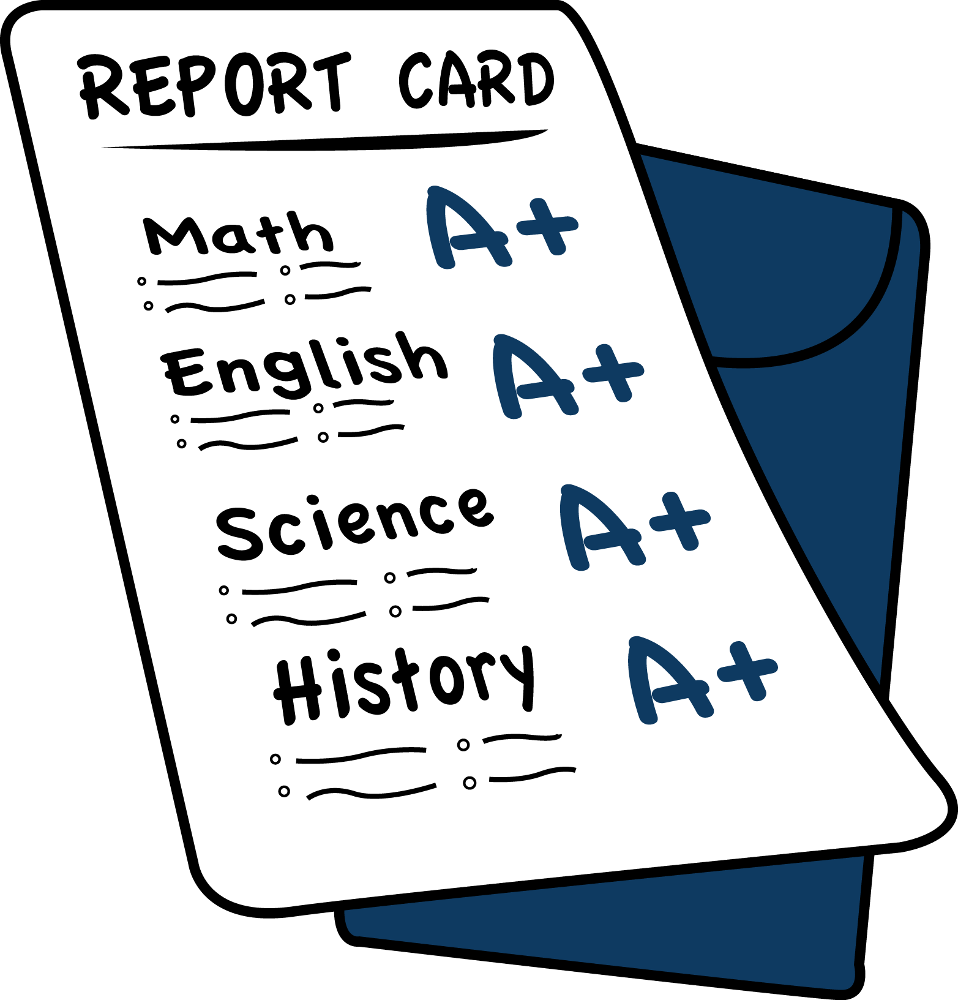

How To Make Better Grades

Making Good grades is a great thing to do, it pleases your teachers, your parents and, mostly important your self the most satisfying thing to some people is getting your report cards and seeing you have all A's its something we all wish would happend. Students who dont make all A's or even have decent grades dont experience that satisfaction others have, so im going to explain how to get good grades .